RetailERP (EL CURIO) is a cloud-based retail enterprise resource planning platform designed for manufacturers and distributors of footwear, bags, belts, and leather goods. It provides end-to-end coverage from product catalog management through inventory, ordering, production, billing, and analytics — all in a single, integrated system.
Open a supported browser (Google Chrome recommended) and navigate to your organization's RetailERP URL (e.g., https://erp.elcurio.com or the address provided by your administrator).
| Role | Default Email | Access Level |
|---|---|---|
| Admin | admin@elcurio.com | Full system access including user management |
| Storemanager | manager@elcurio.com | All business operations; view-only on admin |
| Accountuser | accounts@elcurio.com | Billing, inventory, and financial operations |
| Viewer | viewer@elcurio.com | Read-only access to all modules |
After login you arrive at the Dashboard — the central command center of RetailERP. It displays live business metrics, trend charts, and recent activity.
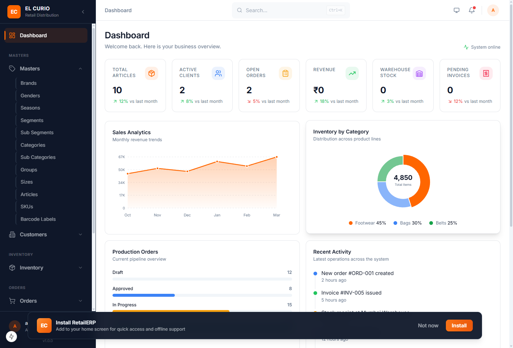
| Card | Description | Trend Indicator |
|---|---|---|
| Total Articles | Number of active products in the catalog | vs. prior month |
| Active Clients | Number of active B2B customer accounts | vs. prior month |
| Open Orders | Customer orders currently in progress (Draft/Confirmed/Processing) | vs. prior week |
| Revenue | Total revenue from finalized invoices (current period) | vs. prior period |
| Warehouse Stock | Total quantity of all items currently available | vs. prior month |
| Pending Invoices | Invoices in DRAFT status awaiting finalization | current count |
Four shortcut buttons appear on the dashboard for one-click access to the most common tasks: New Order, New Article, Stock Receipt, and Generate Invoice.
The collapsible left sidebar is organized into functional sections. Click any section header to expand its sub-menu. Click the chevron icon at the top to collapse the sidebar to icon-only mode (saving screen space). The active page is highlighted with a blue accent bar.
| Section | Contains |
|---|---|
| Dashboard | Home with KPIs, charts, and recent activity |
| Masters | Brands, Genders, Seasons, Segments, Sub-Segments, Categories, Sub-Categories, Groups, Sizes, Articles, SKUs, Barcode Labels |
| Customers | Clients and Stores |
| Inventory | Stock Overview, Receipt (GRN), Dispatch, Returns, Adjustment, Transactions, Stock Freeze |
| Orders | Customer Orders, Manual Entry, Scan Entry, Sales Channels |
| Production | Production Orders & Tracking |
| Billing | Invoices, Packing Lists, Delivery Notes |
| Reports | Sales, Inventory, Production, GST, Valuation, and more |
| Administration | Users, Roles, Audit Log, Company Master, License |
The top bar always shows your current location (e.g., Dashboard > Masters > Articles). Click any segment to navigate back to that level.
Press Ctrl+K (or Cmd+K on Mac) from any page to open the global search palette. Type to search across all modules — articles, clients, orders, and invoices. Results are grouped by module; press Enter or click to open the selected record. Press Escape to close.
Every list page includes a search bar that filters by the primary identifier fields of that module. Additional filter dropdowns, date range pickers, and toggle switches appear above the table. Filters apply immediately. Click Clear Filters to reset. Column headers can be clicked to sort ascending/descending.
Large datasets are paginated. Default page size is 10 rows; change via the page-size selector to 10, 25, 50, or 100 rows. Navigate with Previous / Next buttons or click a specific page number. The total count is shown ("Showing 1–10 of 247 records").
Invoices-2026-03-22.csv).All master and transactional modules follow the same create/read/update/delete pattern:
| Shortcut | Action |
|---|---|
Ctrl+K / Cmd+K | Open global search palette |
Escape | Close modal dialogs and search palette |
Enter | Confirm / submit active form or selected search result |
Tab | Move to next form field |
Shift+Tab | Move to previous form field |
The Masters module contains all reference lookup tables that the rest of the system depends on. These must be populated before creating articles, placing orders, or generating invoices. Set up master data in the sequence shown below, as some items depend on others (e.g., Sub-Segments require Segments to exist first).
Brands represent the product brand labels under which your articles are marketed. Each article must be associated with exactly one brand.
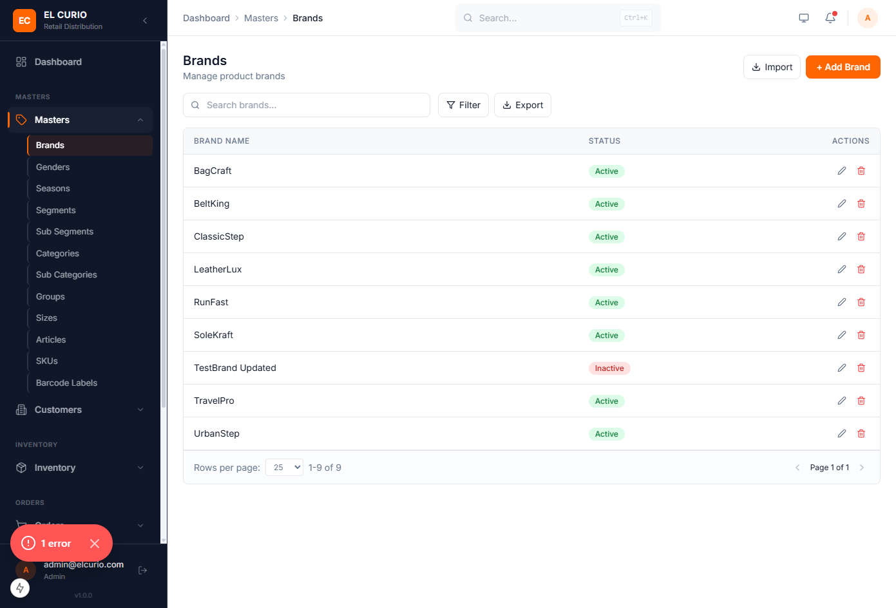
| Field | Type | Required | Description |
|---|---|---|---|
| Brand Name | Text | Yes | Display name of the brand (e.g., "LeatherLux", "UrbanStep"). Must be unique. |
| Active | Toggle | Yes | Whether the brand is available in article creation dropdowns. Inactive brands are hidden from dropdowns but preserved in existing records. |
Categories define the physical product type (e.g., Shoes, Bags, Belts). Sub-Categories provide a second level of classification within a parent Category (e.g., Derby, Oxford, Loafer under Shoes).
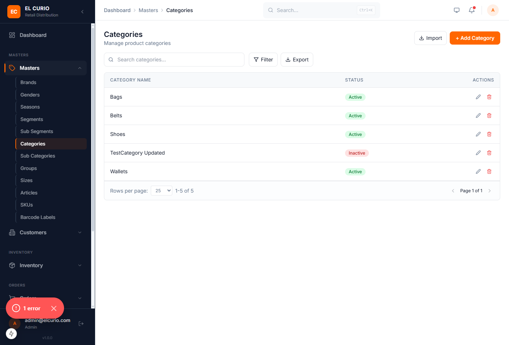
| Field | Type | Required | Description |
|---|---|---|---|
| Category Name | Text | Yes | Product type name (e.g., "Shoes", "Bags", "Belts"). Must be unique. |
| Active | Toggle | Yes | Availability for selection in article creation. |
The system ships with three default categories: Bags, Belts, Shoes. Sub-categories include Derby, Oxford, Loafer, Sneaker (under Shoes), Backpack, Duffle, Laptop Bag (under Bags), and Casual Belt, Formal Belt (under Belts).
| Sub-Category Field | Type | Required | Description |
|---|---|---|---|
| Parent Category | Dropdown | Yes | The parent category this sub-category belongs to. Select from active categories. |
| Sub-Category Name | Text | Yes | Name of the sub-category (e.g., "Derby"). Must be unique within its parent. |
Segments represent the primary product line divisions (e.g., Footwear, Leather Goods). They are the broadest classification and drive attribute display, reporting, and invoice formatting. Sub-Segments provide a second tier within a segment (e.g., Formal, Casual, Sports under Footwear; Travel, Fashion under Leather Goods).
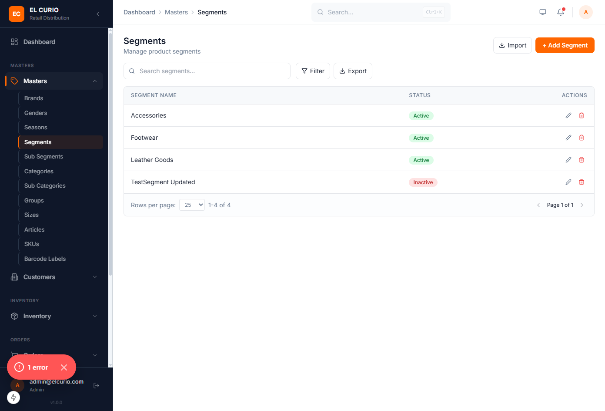
| Field | Type | Required | Description |
|---|---|---|---|
| Segment Name | Text | Yes | Product line name (e.g., "Footwear", "Leather Goods"). Must be unique. |
| Active | Toggle | Yes | Whether the segment is available for selection. |
Groups represent design families or collection lines (e.g., Classic Collection, Executive Collection, Sport Collection, Urban Collection). Groups tie related articles together for buying and reporting purposes.
Genders classify articles by target demographic. The system ships with Men, Women, and Unisex. Gender drives size chart selection and reporting segmentation. Custom genders (e.g., "Kids") can be added.
Seasons represent collection cycles (e.g., SS25 = Spring/Summer 2025, AW25 = Autumn/Winter 2025).
| Field | Type | Required | Description |
|---|---|---|---|
| Season Code | Text | Yes | Short unique identifier (e.g., "SS26"). Convention: season abbreviation + 2-digit year. |
| Start Date | Date | Yes | When the season officially begins. Used for filtering and reporting. |
| End Date | Date | Yes | When the season ends. Must be after the Start Date. |
The Sizes module manages the multi-standard size conversion chart used platform-wide. It is especially important for footwear, where sizes must be expressed in US, European, UK, and Indian standards across different gender/age groups. The interface displays tabs for Men, Women, and Kids.
| Field | Type | Required | Description |
|---|---|---|---|
| Euro Size | Number | Yes | European size standard (e.g., 38, 39, 40). Used as the primary size reference in the system. |
| UK Size | Text | Yes | United Kingdom size standard (e.g., 5, 5.5, 6). |
| US Size | Text | Yes | United States size standard (e.g., 6, 6.5, 7). |
| IND Size | Text | Yes | Indian size standard (typically matches UK sizing). |
| Inches | Decimal | No | Foot length in inches for reference. |
| CM | Decimal | No | Foot length in centimeters for reference. |
| Euro | UK | US (Men) | Indian | Inches | CM |
|---|---|---|---|---|---|
| 38 | 5 | 6 | 5 | 9.69 | 24.6 |
| 39 | 5.5 | 6.5 | 5.5 | 9.88 | 25.1 |
| 40 | 6 | 7 | 6 | 10.00 | 25.4 |
| 41 | 7 | 8 | 7 | 10.25 | 26.0 |
| 42 | 8 | 9 | 8 | 10.50 | 26.7 |
| 43 | 9 | 10 | 9 | 10.75 | 27.3 |
| 44 | 10 | 11 | 10 | 11.00 | 27.9 |
| 45 | 11 | 12 | 11 | 11.25 | 28.6 |
Articles are the central product master of RetailERP. Each article represents a unique product style and color combination in your catalog. Articles tie together all master data (brand, segment, category, gender, season, group) and serve as the foundation for inventory, orders, production, and billing.
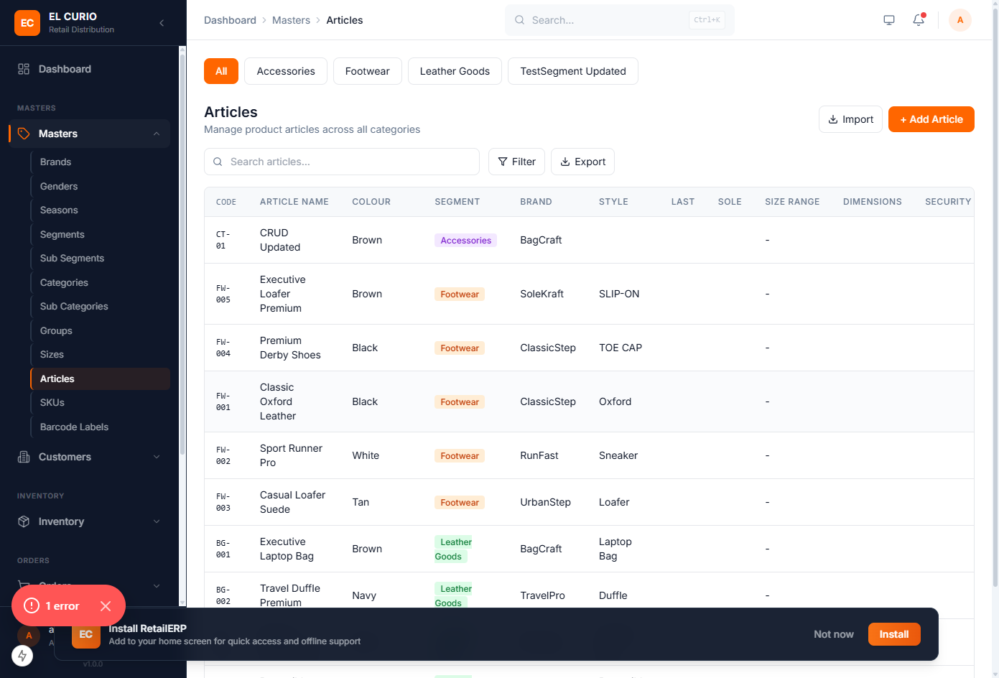
| Field | Type | Required | Description |
|---|---|---|---|
| Article Code | Text | Yes | Unique product identifier (e.g., "ART-001", "SC-BLK-001"). Alphanumeric, no spaces. |
| Article Name | Text | Yes | Descriptive product name (e.g., "Classic Derby Black"). |
| Brand | Dropdown | Yes | Select from registered active brands. |
| Segment | Dropdown | Yes | Product line segment (Footwear or Leather Goods). Drives which segment-specific fields appear. |
| Sub-Segment | Dropdown | No | Filtered to sub-segments of the selected Segment (e.g., Formal, Casual). |
| Category | Dropdown | Yes | Physical product type (Shoes, Bags, or Belts). |
| Sub-Category | Dropdown | No | Detailed type filtered to selected Category (e.g., Derby, Oxford, Loafer). |
| Gender | Dropdown | Yes | Target demographic (Men, Women, Unisex). |
| Season | Dropdown | No | Seasonal collection (e.g., SS25, AW25). |
| Group | Dropdown | No | Design family (e.g., Classic Collection, Executive Collection). |
| Color | Text | Yes | Product color description (e.g., "Black", "Tan Brown"). |
| HSN Code | Text | Yes | Harmonized System Nomenclature code for GST classification (e.g., 6403 for leather footwear). |
| MRP | Number | Yes | Maximum Retail Price in INR. Used as the basis for all margin calculations. |
| CBD | Number | No | Cost Breakdown — internal manufacturing or procurement cost. Used for profitability analysis. |
| UOM | Dropdown | Yes | Unit of Measure. Default: PAIRS for footwear, PCS for bags/belts. |
| Style | Text | No | Internal style reference code. |
| Fastener | Text | No | Closure type (Lace-up, Slip-on, Buckle, Zip, Hook-and-Loop, etc.). |
| Launch Date | Date | No | Planned market launch date for the article. |
| Image URL | Text | No | URL to the product image displayed in the catalog and on documents. |
| Active | Toggle | Yes | Whether the article is available for ordering and invoicing. Deactivate instead of deleting if historical records exist. |
The articles list supports extensive filtering via the filter bar:
When an article's Segment is selected, additional segment-specific fields appear on the form. These fields capture the technical specifications needed for production and quality control.
Displayed when Segment = Footwear (covers Shoes across all sub-categories).
| Field | Type | Description |
|---|---|---|
| Last | Text | Shoe last (mold) identifier used in the production line. Critical for manufacturing consistency. |
| Upper Leather | Text | Type of leather for the shoe upper (e.g., "Full Grain Calf", "Nappa", "Suede", "PU Synthetic"). |
| Lining Leather | Text | Type of leather/material for the shoe lining (e.g., "Pig Lining", "Nappa Lining", "Fabric"). |
| Sole | Text | Sole type and material (e.g., "Leather Sole", "TPR Sole", "Rubber Sole", "EVA"). |
| Size Run From | Number | Starting Euro size for this article (e.g., 38). Defines the minimum size produced. |
| Size Run To | Number | Ending Euro size for this article (e.g., 45). Defines the maximum size produced. |
Displayed when Segment = Leather Goods (covers Bags, Belts, Wallets, Accessories).
| Field | Type | Description |
|---|---|---|
| Dimensions | Text | Product dimensions as Length × Width × Height (e.g., "35cm × 12cm × 28cm" for a bag). |
| Security Features | Text | Security features such as combination locks, RFID blocking lining, anti-theft zippers, etc. |
| Material | Text | Primary material composition (e.g., "Genuine Leather", "Canvas", "Nylon"). |
| Hardware | Text | Hardware finish and type (e.g., "Antique Brass", "Gunmetal", "Silver Tone"). |
Belt articles (Category = Belts) capture additional fields:
| Field | Type | Description |
|---|---|---|
| Belt Width | Text | Width in mm (e.g., "35mm", "40mm"). Standard dress belt = 35mm, casual = 40mm. |
| Buckle Type | Text | Buckle style (e.g., "Pin Buckle", "Plate Buckle", "Ratchet"). |
| Length Range | Text | Available length range in cm (e.g., "80–120cm adjustable"). |
SKUs (Stock Keeping Units) represent the most granular product level — a unique combination of Article + Size. Each SKU has an auto-generated barcode for warehouse scanning and POS operations.
| Field | Type | Description |
|---|---|---|
| SKU Code | Auto-generated | Unique identifier combining article code and size (e.g., "ART-001-EU40"). |
| Article | Reference | The parent article this SKU belongs to. |
| Euro Size | Number | The European size of this variant. |
| UK / US Size | Auto-filled | Automatically populated from the size conversion chart. |
| EAN Code | Auto-generated | 13-digit European Article Number for barcode scanning and POS compatibility. |
| Barcode Image | Auto-generated | Visual barcode generated from the EAN code. Printable via the Barcode Labels module. |
| MRP | Number | Size-specific MRP override. Defaults to the parent article's MRP. |
The Barcode Labels module allows printing of barcode labels for individual SKUs or batch printing for a set of articles/sizes.
The Suppliers module manages your vendor and supplier accounts — the entities from which you procure raw materials, finished goods, or manufacturing services. Supplier records are linked to Goods Receipt Notes and Stock Receipts to track procurement history.
| Field | Type | Required | Description |
|---|---|---|---|
| Supplier Code | Text | Yes | Unique identifier for the supplier (e.g., "SUP-001"). |
| Supplier Name | Text | Yes | Business name of the supplier / vendor. |
| Contact Person | Text | No | Primary point of contact at the supplier's organization. |
| Yes | Primary contact email address for purchase order communication. | ||
| Phone | Text | Yes | Primary contact phone number. |
| GSTIN | Text (15) | Yes | Supplier's GST Identification Number. Required for input tax credit claims. |
| PAN | Text (10) | Yes | Supplier's Permanent Account Number. |
| Address | Text | Yes | Full registered business address of the supplier. |
| City | Text | Yes | City of operation. |
| State | Dropdown | Yes | State of registration. Determines GST type for procurement (intra/inter-state). |
| Payment Terms | Dropdown | No | Standard payment terms (e.g., Net-30, Net-60, Advance, COD). |
| Category | Dropdown | No | Supplier category (Raw Material, Finished Goods, Services, Logistics). |
| Active | Toggle | Yes | Whether the supplier is active and available for new procurement. |
The Customers module manages the B2B client relationships and their retail store locations. Clients represent the business entities you sell to (retail chains, distributors, individual retailers). Stores represent the physical retail locations where goods are delivered and where tax invoices are addressed.
Clients are your B2B distribution partners. Each client can have multiple store locations. The client record holds the master margin and tax information.
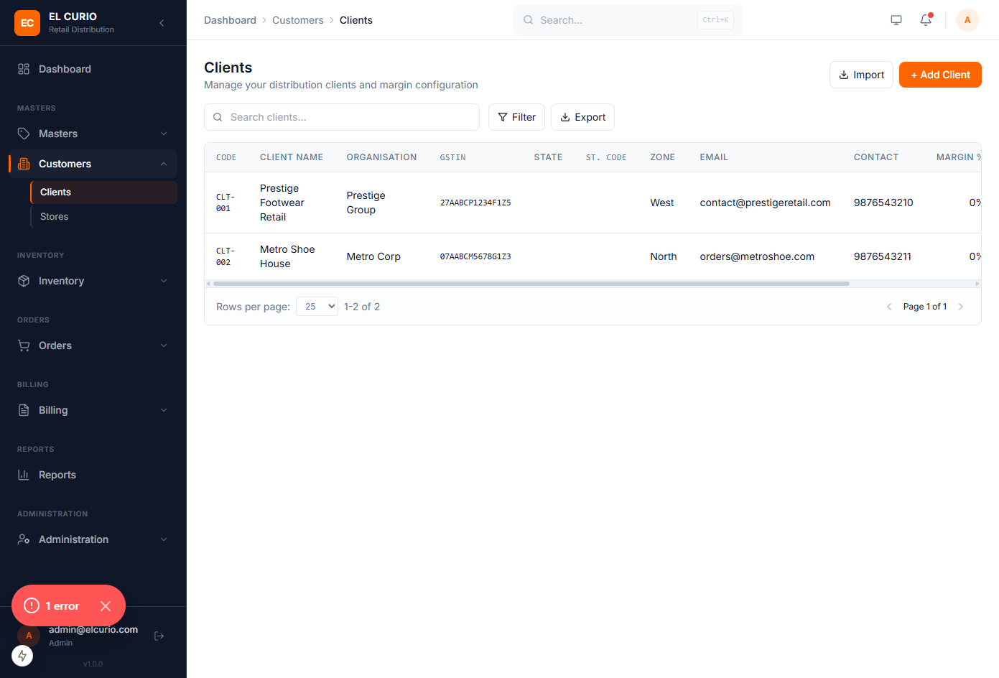
| Field | Type | Required | Description |
|---|---|---|---|
| Client Code | Text | Yes | Unique client identifier (e.g., "CLI-001"). |
| Client Name | Text | Yes | Business or trade name. |
| Organisation | Text | Yes | Legal entity name as per GST registration. |
| GSTIN | Text (15) | Yes | GST Identification Number. Validated format: 2-digit state code + 10-digit PAN + entity + check digit + "Z". |
| PAN | Text (10) | Yes | Permanent Account Number for income tax purposes. |
| State | Dropdown | Yes | Indian state of registration. Determines intra/inter-state GST application. |
| Zone | Dropdown | Yes | Geographic sales zone (North, South, East, West, Central). Used for territory reporting. |
| Yes | Primary contact email. | ||
| Contact No | Text | Yes | Primary phone number. |
| Margin % | Number | Yes | Default trade margin percentage applied to MRP for all orders to this client (e.g., 35 = 35% discount on MRP). |
| Margin Type | Dropdown | Yes | NET OF TAXES: margin applied on price excluding tax. ON MRP: margin applied directly on MRP. |
| Active | Toggle | Yes | Whether the client is active. Inactive clients cannot receive new orders. |
Stores represent the physical retail locations belonging to clients. Each client can have multiple stores. Store-level tax registration, address, and operational details are used for invoice generation and logistics planning.
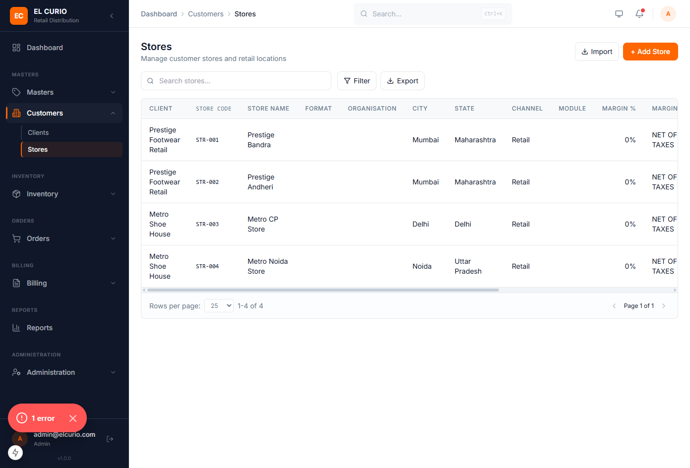
| Field | Type | Required | Description |
|---|---|---|---|
| Store Code | Text | Yes | Unique store identifier (e.g., "STR-001"). |
| Store Name | Text | Yes | Display name (e.g., "Fashion Hub — Connaught Place"). |
| Client | Dropdown | Yes | The parent client this store belongs to. |
| Format | Dropdown | Yes | RETAIL_MALL (shopping mall), RETAIL_HIGH_STREET (standalone), or OUTLET (factory outlet). |
| Channel | Dropdown | Yes | MBO (Multi-Brand Outlet), EBO (Exclusive Brand Outlet), or DISTRIBUTOR. |
| Modus Operandi | Dropdown | Yes | SOR (Sale or Return — consignment) or OUT_MKT (Outright Market — firm sale). |
| Margin % | Number | No | Store-level margin override. If set, overrides the client-level margin for all orders to this store. |
| Billing Address | Text | Yes | Full billing address printed on invoices. |
| Shipping Address | Text | Yes | Delivery address for packing lists and shipping labels. |
| State | Dropdown | Yes | State of the store. Critical: compared to company state to determine CGST+SGST vs. IGST. |
| GSTIN | Text | Yes | Store-level GST number (may differ from client GSTIN for multi-state operations). |
| Manager Name | Text | No | Store manager name for delivery coordination. |
| Manager Contact | Text | No | Store manager phone number. |
The Warehouses module manages the physical storage locations where inventory is held. RetailERP supports multi-warehouse operations — each warehouse maintains its own independent stock ledger. All inventory operations (receipt, dispatch, adjustment, freeze) are always performed in the context of a specific warehouse.
| Field | Type | Required | Description |
|---|---|---|---|
| Warehouse Code | Text | Yes | Unique identifier (e.g., "WH-DELHI-01", "WH-MUMBAI-01"). |
| Warehouse Name | Text | Yes | Descriptive name of the warehouse (e.g., "Delhi Central Warehouse"). |
| Address | Text | Yes | Full physical address of the warehouse. |
| City | Text | Yes | City where the warehouse is located. |
| State | Dropdown | Yes | State of the warehouse. Used for dispatching location on e-Way Bills. |
| PIN Code | Text | Yes | Postal code. |
| Manager Name | Text | No | Warehouse manager responsible for operations. |
| Phone | Text | No | Warehouse contact number. |
| Capacity | Number | No | Storage capacity in pairs/units (for reference and planning). |
| Active | Toggle | Yes | Whether the warehouse is operational. Inactive warehouses cannot receive or dispatch stock. |
The Stock Overview is a live monthly stock ledger displaying the current inventory position across all warehouses and articles. It tracks nine movement groups — from opening stock through all inward and outward movements — to the closing (available) stock balance. This is the primary screen for checking stock availability before order fulfillment.
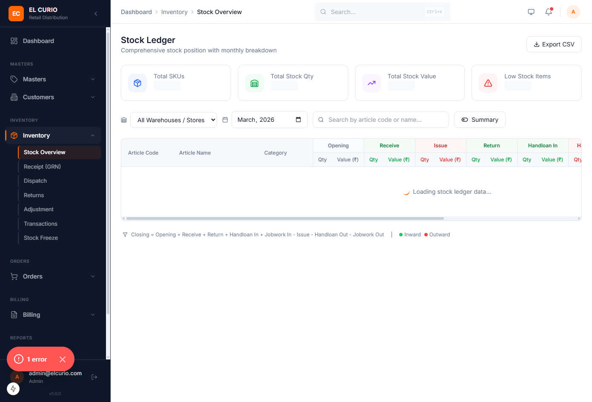
| # | Movement Group | Direction | Description |
|---|---|---|---|
| 1 | Opening Stock | — | Carried forward from the previous period's closing stock (set by Stock Freeze). |
| 2 | Purchase / Receipt | Inward (+) | Goods received from suppliers via GRN (Goods Receipt Note). |
| 3 | Production Inward | Inward (+) | Finished goods received from completed production work orders. |
| 4 | Sales Dispatch | Outward (−) | Goods dispatched against confirmed customer orders. |
| 5 | Customer Returns | Inward (+) | Goods returned by customers back into the warehouse. |
| 6 | Supplier Returns | Outward (−) | Goods returned to suppliers (rejected or excess stock). |
| 7 | Adjustment (Add) | Inward (+) | Approved stock additions (found during physical count, correction of prior errors). |
| 8 | Adjustment (Remove) | Outward (−) | Approved stock reductions (damaged, lost, expired stock). |
| 9 | Closing Stock | — | Calculated: Opening + All Inward − All Outward. |
| Column | Description |
|---|---|
| Article Code | Unique product identifier |
| Article Name | Product description |
| Category | Product category (Shoes, Bags, Belts) |
| Opening Qty | Stock quantity at the beginning of the current period |
| Receive Qty | Total goods received (Purchase + Production) during the period |
| Issue Qty | Total goods issued (Dispatch + Supplier Returns) during the period |
| Return Qty | Customer returns received during the period |
| Closing Qty | Current available stock (computed in real-time) |
| Opening Value | Monetary value of opening stock (at CBD/cost price) |
| Closing Value | Current monetary value of available stock |
A Goods Receipt Note (GRN) records the inward movement of goods into a warehouse. Every time stock arrives from a supplier or is received from production, a GRN is created. The GRN immediately updates the stock ledger and creates an audit trail of all inward movements.
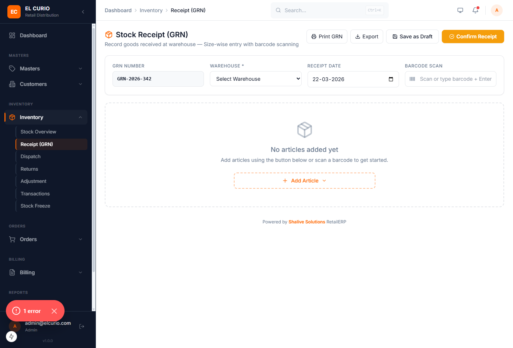
| Field | Type | Required | Description |
|---|---|---|---|
| GRN Number | Auto-generated | — | Sequential reference (e.g., "GRN-2026-0001"). |
| Receipt Date | Date | Yes | Date goods were physically received. Defaults to today. |
| Warehouse | Dropdown | Yes | The warehouse receiving the goods. |
| Supplier | Dropdown | Yes | The supplier from whom goods are received. |
| Article | Dropdown | Yes | The article being received. Selecting this loads the size-run grid automatically. |
| Reference Number | Text | No | Supplier invoice number, delivery note number, or purchase order number for cross-reference. |
| Notes | Text | No | Notes about the shipment (partial delivery, condition, discrepancies). |
When an article is selected, the system loads a size-run entry grid showing all applicable sizes. Enter received quantities across the full size run in a single screen. The Total column updates as you type.
The Dispatch module records outward movement of goods from the warehouse to customers. It is linked to confirmed customer orders. The system enforces real-time stock availability — you cannot dispatch more than what is physically available in the selected warehouse.
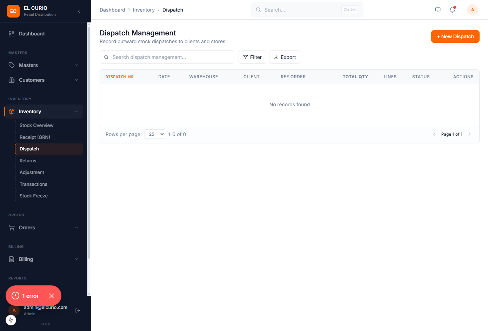
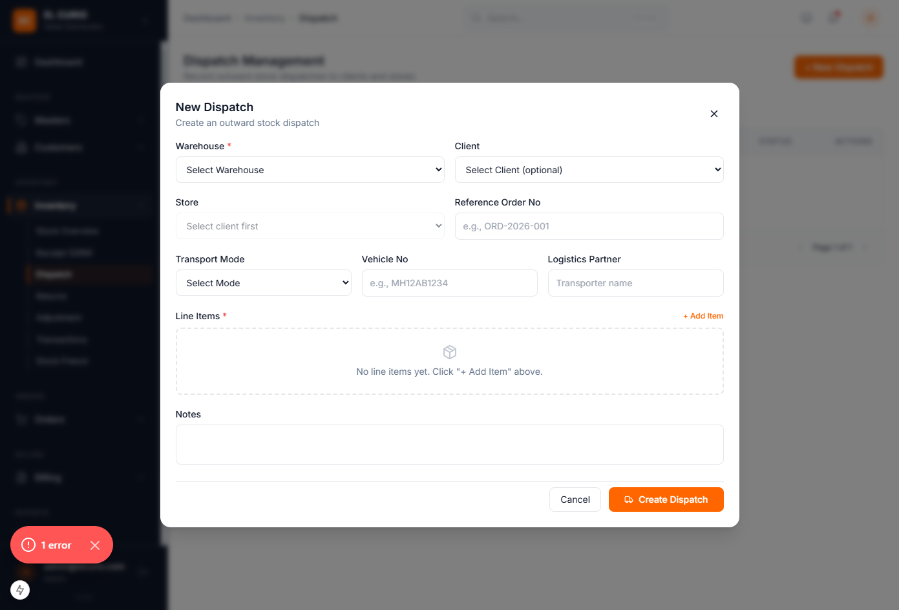
| Field | Type | Required | Description |
|---|---|---|---|
| Dispatch Number | Auto-generated | — | Sequential dispatch reference (e.g., "DSP-2026-0001"). |
| Dispatch Date | Date | Yes | Date goods leave the warehouse. |
| Warehouse | Dropdown | Yes | The warehouse dispatching the goods. |
| Customer Order | Dropdown | Yes | The confirmed order against which dispatch is being made. |
| Dispatch Quantities | Size-run grid | Yes | Quantity dispatched per size. Cannot exceed available stock per size. |
| Vehicle Number | Text | No | Transport vehicle registration number for e-Way Bill and tracking. |
| LR Number | Text | No | Lorry Receipt number from the logistics partner. |
| Logistics Partner | Text | No | Name of the courier or transport company. |
The Returns module processes inward movements of goods returned by customers. Returns are logged with a reason code and linked to the original invoice or order. Returned goods are credited back into warehouse stock and can generate Credit Notes in the Billing module.
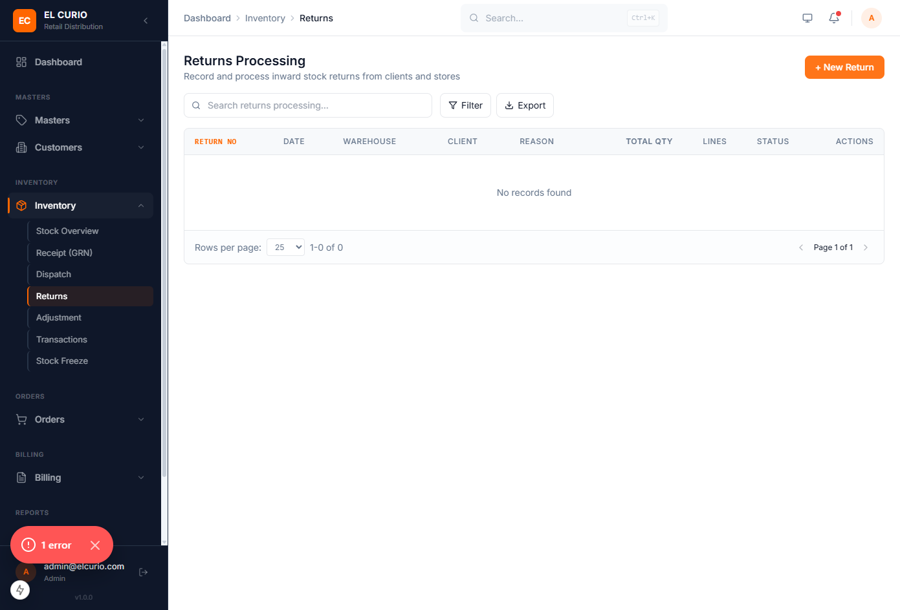
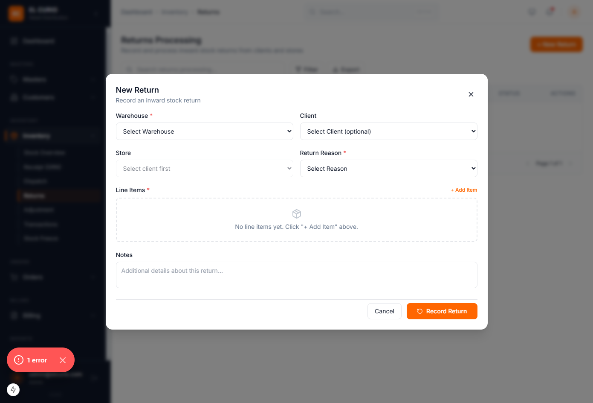
| Field | Type | Required | Description |
|---|---|---|---|
| Return Number | Auto-generated | — | Sequential reference (e.g., "RET-2026-0001"). |
| Return Date | Date | Yes | Date goods are physically received back at the warehouse. |
| Warehouse | Dropdown | Yes | Warehouse receiving the returned goods. |
| Return Reference | Text | Yes | Original invoice number or order number being reversed. |
| Client / Store | Dropdown | Yes | The customer returning the goods. |
| Article | Dropdown | Yes | The article being returned. |
| Return Quantities | Size-run grid | Yes | Quantity returned per size. |
| Return Reason | Dropdown | Yes | DEFECTIVE, WRONG_SIZE, WRONG_ARTICLE, CUSTOMER_CANCEL, DAMAGED_TRANSIT, QUALITY_REJECTION, EXCESS_STOCK (SOR). |
| Notes | Text | No | Additional details about condition of returned goods. |
Stock Adjustments correct discrepancies found during physical inventory counts, account for damaged or lost goods, and fix data entry errors. A mandatory two-step approval workflow prevents unauthorized stock manipulation. All adjustments create permanent audit trail entries.
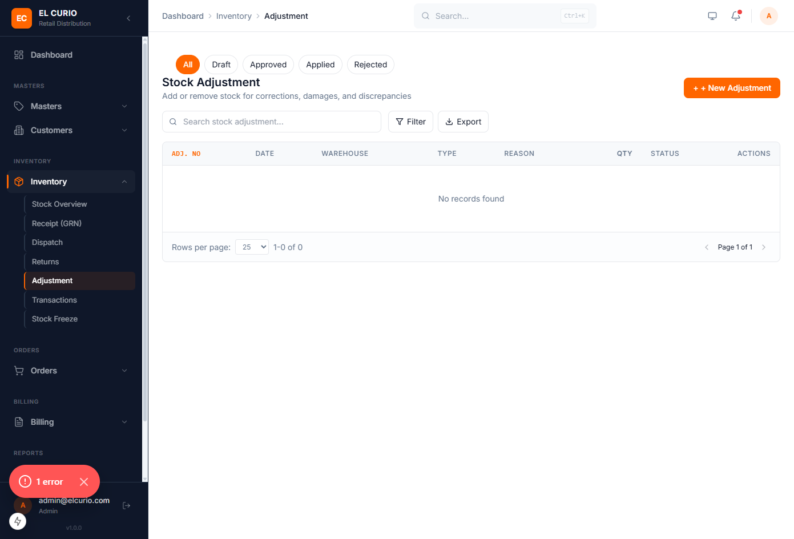
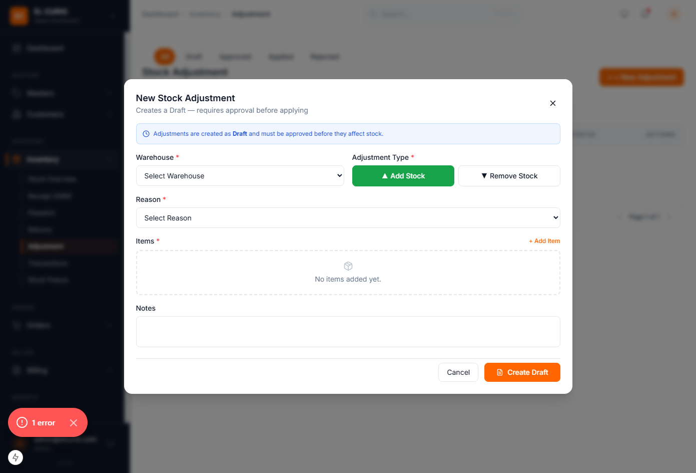
| Type | Effect | When to Use |
|---|---|---|
| ADD | Increases stock (+) | Extra units found during count, correction of under-recording, goods received without GRN |
| REMOVE | Decreases stock (−) | Damaged goods write-off, lost/stolen stock, expired goods, correction of over-recording |
| Field | Type | Required | Description |
|---|---|---|---|
| Adjustment Number | Auto-generated | — | Sequential reference (e.g., "ADJ-2026-0001"). |
| Adjustment Date | Date | Yes | Date of physical count or discrepancy discovery. |
| Warehouse | Dropdown | Yes | The warehouse where the adjustment is being made. |
| Adjustment Type | Toggle | Yes | ADD (increase) or REMOVE (decrease). |
| Article | Dropdown | Yes | The article being adjusted. |
| Quantities | Size-run grid | Yes | Adjustment quantity per size. |
| Reason | Text | Yes | Detailed explanation required for audit purposes. |
The Inventory Transactions ledger provides a complete, immutable chronological record of every stock movement in the system. It is the definitive "source of truth" for all inventory changes and is essential for stock reconciliation, auditing, and investigating discrepancies.
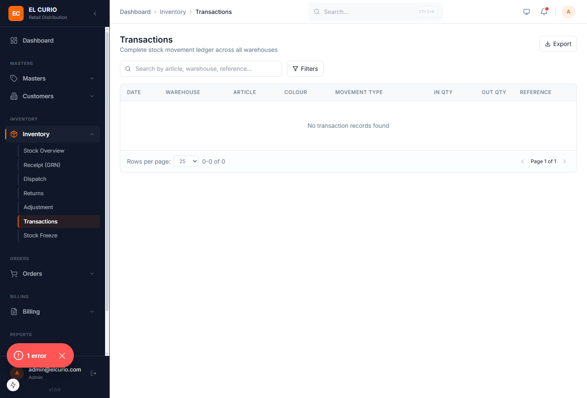
| Field | Description |
|---|---|
| Transaction ID | Unique system-generated identifier for each stock movement event |
| Date & Time | Exact timestamp when the movement was recorded |
| Warehouse | The warehouse where the movement occurred |
| Article / SKU | The article and specific size (SKU) involved in the movement |
| Movement Type | OPENING, PURCHASE, PRODUCTION, SALES, RETURN, ADJUSTMENT |
| Direction | INWARD (+) or OUTWARD (−) |
| Quantity | Number of units moved in this transaction |
| Reference | Source document number (GRN, Dispatch, Return, or Adjustment number) |
| User | The system user who created this transaction |
| Running Balance | Cumulative stock balance after this transaction |
| Filter | Options |
|---|---|
| Article | Filter by specific article code or name |
| Warehouse | Filter by a specific warehouse location |
| Date Range | From date and To date (inclusive) |
| Movement Type | OPENING, PURCHASE, PRODUCTION, SALES, RETURN, ADJUSTMENT |
| Direction | INWARD, OUTWARD, or All |
| User | Filter transactions created by a specific user |
Stock Freeze locks inventory at a specific date for period-end closing. This preserves closing stock values for financial reporting and ensures the closing stock of one period becomes the opening stock of the next. Performed monthly, quarterly, or at year-end.
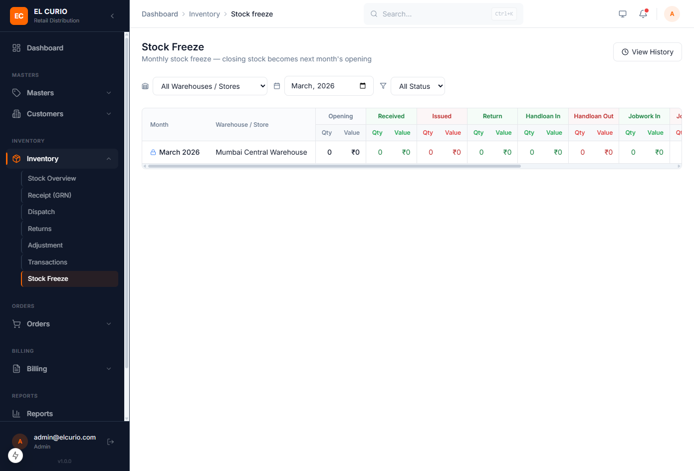
| Field | Type | Required | Description |
|---|---|---|---|
| Warehouse | Dropdown | Yes | The warehouse to freeze. Each warehouse is frozen independently. |
| Freeze Date | Date | Yes | The cut-off date. Typically the last day of the financial period (e.g., 2026-03-31). |
| Freeze Notes | Text | No | Reason for the freeze (e.g., "Q1 2026 closing", "Annual audit freeze"). |
The Customer Orders module manages the full lifecycle of B2B sales orders — from initial draft through confirmation, processing, and dispatch. Orders are created with size-wise quantity entry against specific articles, with real-time stock availability checking at each stage.
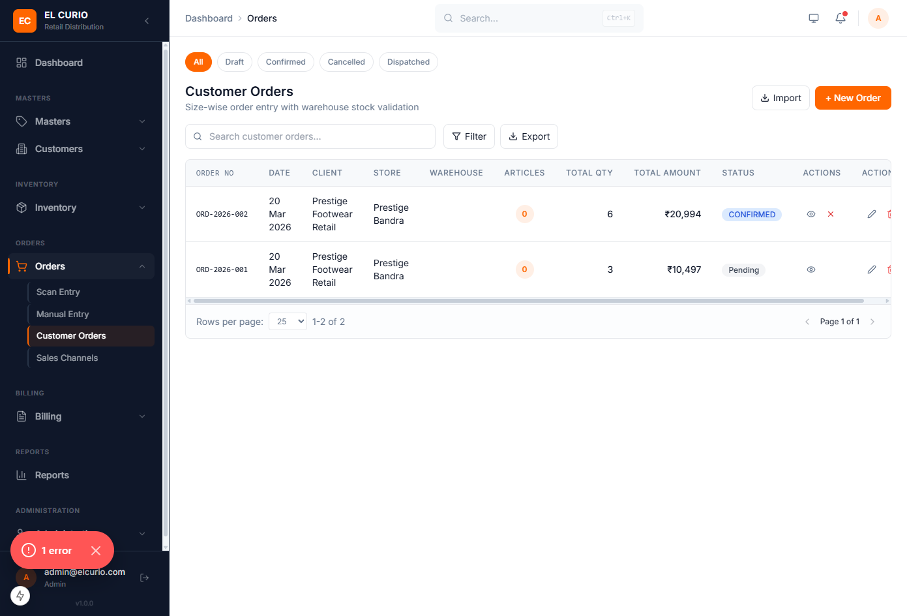
| Field | Type | Required | Description |
|---|---|---|---|
| Order Number | Auto-generated | — | Sequential reference (e.g., "ORD-2026-001"). |
| Order Date | Date | Yes | Date the order is placed. Defaults to today. |
| Client | Dropdown | Yes | The B2B client placing the order. |
| Store | Dropdown | Yes | The specific delivery store (filtered to stores of the selected client). |
| Warehouse | Dropdown | No | Source warehouse for real-time stock availability checking. Strongly recommended. |
| Season | Dropdown | No | Season associated with this order for reporting. |
| Sales Channel | Dropdown | No | Channel through which the order was received (MBO, EBO, Distributor, Online). |
| PO Number | Text | No | Customer's Purchase Order reference number for cross-matching. |
| Euro | UK | IND | Available Stock | Order Qty | Post-Order Stock |
|---|---|---|---|---|---|
| 39 | 5.5 | 5.5 | 120 | 20 | 100 |
| 40 | 6 | 6 | 150 | 30 | 120 |
| 41 | 7 | 7 | 180 | 40 | 140 |
| 42 | 8 | 8 | 160 | 35 | 125 |
| 43 | 9 | 9 | 100 | 25 | 75 |
As you type Order Qty, the Post-Order Stock column updates in real-time. Red highlight indicates insufficient stock for the entered quantity.
| Status | Description | Allowed Actions |
|---|---|---|
| DRAFT | Created, not finalized. Stock not reserved. | Edit, Confirm, Cancel |
| CONFIRMED | Locked. Stock quantities reserved in warehouse. | Cancel only (with reason) |
| PROCESSING | Warehouse is picking and packing. | Cancel (with reason) |
| DISPATCHED | Goods have left the warehouse. | View, Print |
| DELIVERED | Goods received and acknowledged by customer. | View, Print |
| CANCELLED | Cancelled. Stock reservation released. | View only |
For warehouse-floor order picking, use the barcode scan interface. Scan each item's barcode with a handheld scanner — the system identifies the article and size automatically and increments the quantity by 1 each scan. Ideal for pre-picking or cross-dock operations.
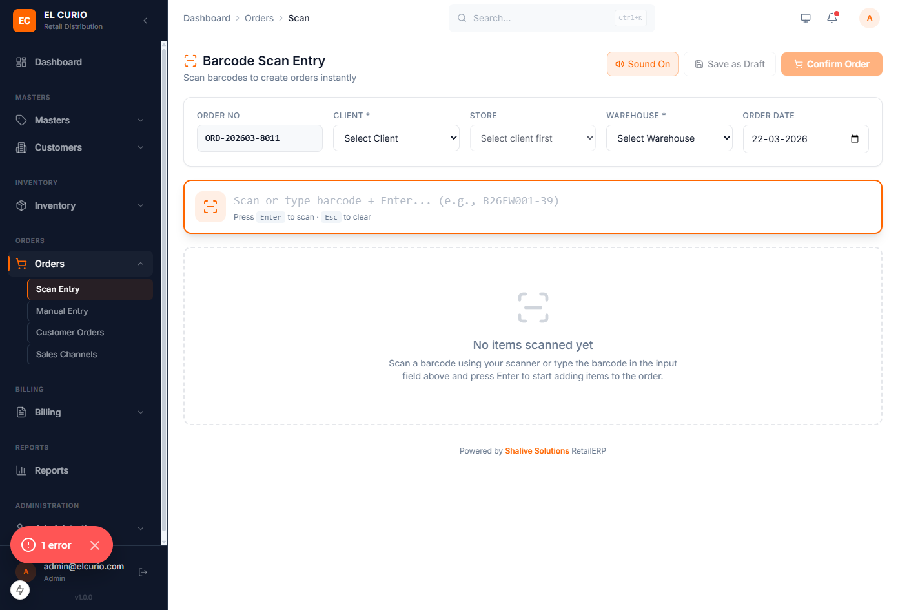
The Manual Order Entry screen provides a simplified single-page form for quick order creation, suited for telephone or counter sales where speed is a priority.
Order Fulfillment encompasses all warehouse operations from a confirmed order through to delivery and invoicing. It links the Orders, Inventory, and Billing modules together through a defined workflow: pick → pack → dispatch → invoice → deliver.
When goods are loaded for transport, record the dispatch (see Chapter 9). Enter vehicle number, LR number, and logistics partner details.
After dispatch is confirmed, generate the GST-compliant tax invoice (see Chapter 16).
| Channel | Description |
|---|---|
| MBO | Multi-Brand Outlet — retail stores carrying multiple brands |
| EBO | Exclusive Brand Outlet — stores dedicated to your brand |
| Distributor | Wholesale distribution partners |
| Online | E-commerce and digital marketplace orders |
Add custom channels by clicking + Add Channel in this section. Channel data powers the channel-wise revenue breakdown in Sales Reports.
This invoice type is generated against a confirmed and dispatched Customer Order. The invoice automatically imports order line items, applies the client's margin, calculates GST based on the Place of Supply, and generates a print-ready GST-compliant tax invoice. This is the primary invoicing workflow for B2B distribution.
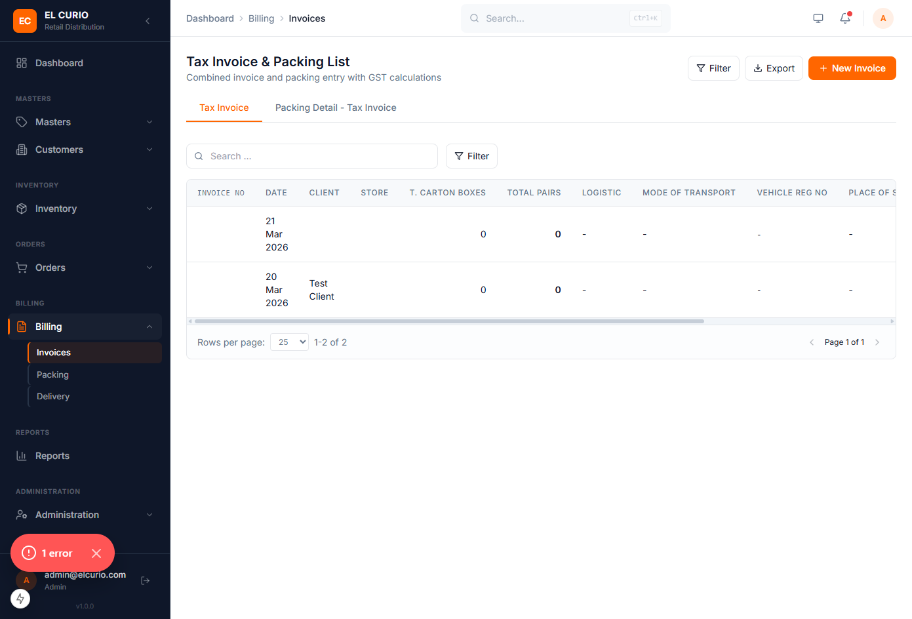
| Field | Type | Required | Description |
|---|---|---|---|
| Invoice Number | Auto-generated | — | Sequential per financial year (e.g., "EC/2026-27/001"). Format configured in Company Master. |
| Invoice Date | Date | Yes | Date of invoice issuance. Defaults to today. |
| Invoice Type | Dropdown | Yes | TAX_INVOICE, CREDIT_NOTE, or DEBIT_NOTE. |
| Client / Store | Dropdown | Yes | Billing address, shipping address, and GSTIN auto-populate from the Store master. |
| Customer Order | Dropdown | Yes | Source order. All line items are auto-imported. |
| Place of Supply | Auto-filled | Yes | Buyer's state. Determines CGST+SGST (intra) or IGST (inter-state). |
| IRN | Text | No | Invoice Reference Number for e-invoicing compliance. |
| E-Way Bill No. | Text | No | Required for goods valued above ₹50,000 in transit. |
| PO Number / Date | Text / Date | No | Customer's PO reference for reconciliation. |
| Type | When to Use | Effect |
|---|---|---|
| TAX_INVOICE | Standard sales invoice for goods delivered | Records revenue; customer owes the invoiced amount |
| CREDIT_NOTE | Goods returned or price adjusted downward | Reduces customer's outstanding balance; adjusts GST liability |
| DEBIT_NOTE | Additional charges or upward price adjustment | Increases customer's outstanding balance |
Unlike order-based invoicing, a Stock Against Invoice is created directly from warehouse stock without a prior customer order. This workflow is used for walk-in sales, spot sales to distributors, or situations where goods are invoiced directly from available stock. The invoice simultaneously reduces warehouse stock.
| Aspect | Order-Based Invoice | Stock-Based Invoice |
|---|---|---|
| Source | Requires a confirmed Customer Order | Created directly from available stock |
| Stock Impact | Stock reduced via separate Dispatch transaction | Stock reduced at the time of invoice creation |
| Use Case | Planned B2B orders with prior commitment | Spot sales, immediate delivery, walk-in customers |
| Line Item Entry | Auto-imported from order lines | Manually add articles and quantities from stock |
| Field | Type | Required | Description |
|---|---|---|---|
| Invoice Number | Auto-generated | — | Same sequential format as order-based invoices. |
| Invoice Date | Date | Yes | Date of issuance. |
| Client / Store | Dropdown | Yes | Billing details auto-populate from Store master. |
| Warehouse | Dropdown | Yes | Source warehouse from which stock will be deducted upon invoicing. |
| Articles | Multi-line | Yes | Add articles manually: select article, size, and quantity. System shows current available stock per size. |
Both invoice types produce the same GST-compliant print format containing:
Packing Lists document the carton-wise breakdown of goods being shipped. They accompany the tax invoice and are required by logistics partners and customers for verification of received goods. A packing list is linked to a customer order or invoice and records exactly which articles and sizes are in each carton box.
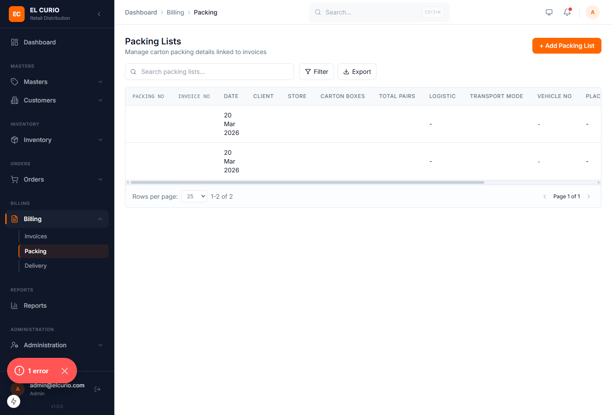
| Field | Type | Required | Description |
|---|---|---|---|
| Packing List No. | Auto-generated | — | Sequential reference (e.g., "PL-2026-0001"). |
| Date | Date | Yes | Date of packing. |
| Invoice | Dropdown | Yes | The invoice this packing list is associated with. |
| Transport Mode | Dropdown | Yes | ROAD, AIR, RAIL, or SEA. |
| Logistics Partner | Text | No | Name of courier or transport company (e.g., "DTDC", "Delhivery"). |
| Vehicle Number | Text | No | Transport vehicle registration number. |
| LR Number | Text | No | Lorry Receipt number from logistics partner. |
| LR Date | Date | No | Date of the lorry receipt. |
| Field | Description |
|---|---|
| Carton Number | Sequential carton box identifier (e.g., 1, 2, 3...) |
| Article | Article code and name packed in this carton |
| Size | Euro size of the packed items |
| Quantity | Number of pairs/units in this carton for this article-size |
| Carton Weight | Gross weight of the carton in kg (optional) |
The Production Planning module manages the manufacturing pipeline for footwear, bags, and leather goods. It links product specifications, material requirements, and size-wise production quantities to create actionable work orders for the factory floor. Production planning ensures the right quantities are manufactured at the right time to meet sales demand.
| Field | Type | Required | Description |
|---|---|---|---|
| Production Order No. | Auto-generated | — | Sequential reference (e.g., "PRD-2026-0001"). |
| Order Date | Date | Yes | Date the production order is created. Defaults to today. |
| Article | Dropdown | Yes | The article to produce. Selecting this auto-fills all material specifications from the article master. |
| Order Type | Dropdown | Yes | REPLENISHMENT (restock existing product), FRESH (new product launch), or SAMPLE (sample run). |
| Planned Start Date | Date | Yes | When production is scheduled to begin. |
| Planned End Date | Date | Yes | When production is expected to complete. |
| Target Warehouse | Dropdown | Yes | Warehouse where finished goods will be received upon production completion. |
When an article is selected, the following fields auto-populate from the Article master record:
| Field | Source | Description |
|---|---|---|
| Group / Collection | Article > Group | Design collection name for the factory |
| Colour | Article > Color | Color specification for material sourcing |
| Last (Shoe Mold) | Article > Last | Production mold reference — critical for footwear |
| Upper Leather | Article > Upper Leather | Upper material specification |
| Lining Leather | Article > Lining Leather | Lining material specification |
| Sole | Article > Sole | Sole type and material |
Enter size-wise production quantities in the same size-run grid format used for orders and receipts. The system tracks planned quantities vs. actual completed quantities per size.
| Status | Who Can Perform | Description |
|---|---|---|
| DRAFT | Any user | Order created; not yet authorized for production |
| APPROVED | Admin, Storemanager | Authorized; materials can be sourced, factory can begin |
| IN PRODUCTION | Warehouse/Production staff | Factory is actively manufacturing |
| COMPLETED | Warehouse/Production staff | Finished goods received into warehouse stock |
| CANCELLED | Admin, Storemanager | Cancelled with reason; no stock impact |
A Bill of Materials (BOM) defines the complete list of raw materials, sub-components, and quantities required to manufacture one unit of a finished article. BOMs drive material requirements planning, cost estimation, and procurement decisions. Each article can have one active BOM with multiple component lines.
| Field | Type | Required | Description |
|---|---|---|---|
| BOM Number | Auto-generated | — | Unique BOM reference (e.g., "BOM-ART001-001"). |
| Article | Dropdown | Yes | The finished article this BOM produces. |
| BOM Version | Text | Yes | Version identifier (e.g., "v1.0", "v2.0"). Allows maintaining BOM revision history. |
| Effective Date | Date | Yes | Date from which this BOM version is active. |
| Status | Dropdown | Yes | DRAFT, ACTIVE, or OBSOLETE. |
| Notes | Text | No | Engineering notes or revision comments. |
| Field | Type | Required | Description |
|---|---|---|---|
| Component Name | Text | Yes | Name of the raw material or sub-component (e.g., "Full Grain Leather Upper", "TPR Sole"). |
| Component Code | Text | No | Internal material code for procurement reference. |
| Quantity | Decimal | Yes | Quantity required per finished unit (e.g., 0.5 sq.m of leather per pair). |
| Unit of Measure | Dropdown | Yes | SQM (square metres), KG, MTR (metres), PCS (pieces), LTR (litres). |
| Unit Cost | Number | No | Cost per unit of the component. Used for cost roll-up and CBD calculation. |
| Component Type | Dropdown | Yes | UPPER, LINING, SOLE, HARDWARE, PACKAGING, OTHER. |
Work Orders are the execution-level documents generated from Production Orders. While a Production Order defines what to make and how many, a Work Order breaks that down into specific factory floor instructions — which production line, which shift, what materials to issue, and what the daily/weekly production targets are. Work orders are the primary document used on the factory floor.
| Field | Type | Required | Description |
|---|---|---|---|
| Work Order Number | Auto-generated | — | Sequential reference linked to the parent Production Order (e.g., "WO-PRD0001-01"). |
| Production Order | Reference | Yes | The parent approved Production Order this work order is executing. |
| Article | Auto-filled | — | Auto-populated from the Production Order. |
| Work Order Date | Date | Yes | Date this work order is issued to the factory. |
| Target Qty | Size-run grid | Yes | Quantities to produce in this work order (may be a subset of the total production order). |
| Production Line | Text | No | Specific factory line or unit assigned for this work order. |
| Supervisor | Text | No | Production supervisor name responsible for this work order. |
| Material Issue List | Auto-generated | — | Materials to be issued from stores, calculated from BOM × target quantities. |
Production Tracking monitors progress against Production Orders and Work Orders in real-time. It records daily production output, quality inspection results, and completed goods receipt into the warehouse. The tracking module provides visibility into production pipeline status and helps identify delays or quality issues early.
| Metric | Description |
|---|---|
| Planned Qty | Total quantity ordered for production per size |
| In-Progress Qty | Quantity currently being manufactured |
| Completed Qty | Quantity that has passed quality check and is ready for warehouse receipt |
| Rejected Qty | Quantity that failed quality inspection |
| Pending Qty | Planned − Completed − Rejected (yet to be started or completed) |
| Completion % | Completed / Planned × 100 |
| Actual End Date | Date production was actually completed (compared to planned) |
The Reports module provides nine report types in a tabbed interface, covering sales, inventory, production, GST compliance, and financial analysis. All reports support date range filtering, CSV export, and print formatting. Access via Dashboard > Reports.
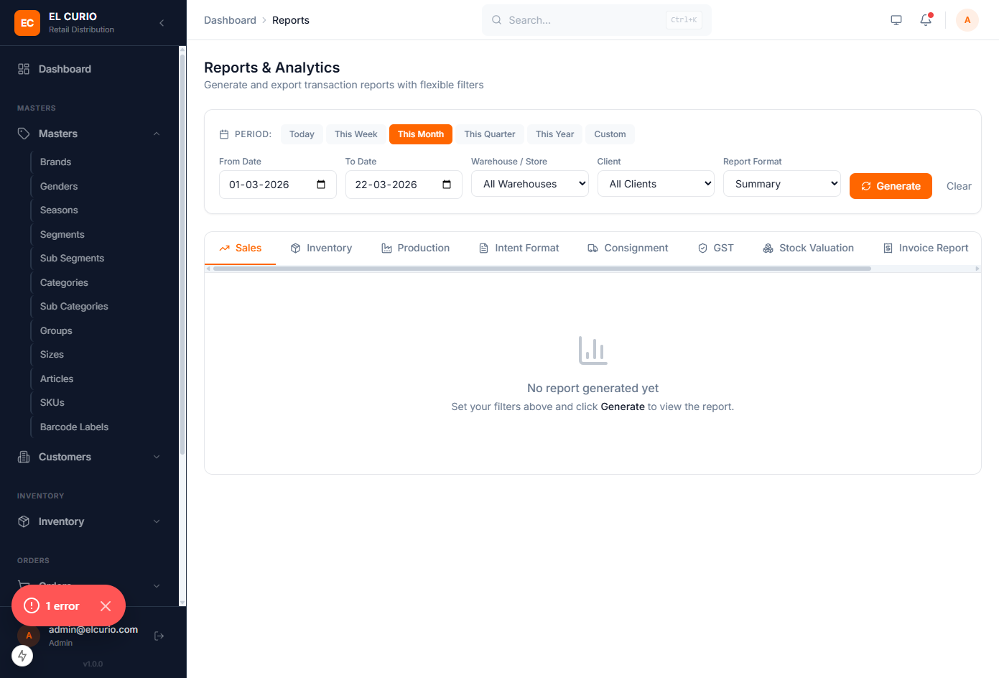
| Shortcut | Range |
|---|---|
| Today | Current date only |
| This Week | Monday of the current week through today |
| This Month | First day of current month through today |
| This Quarter | First day of current quarter through today |
| This Year | January 1 through today |
| Custom | Select any start and end date using the date picker |
Filters: Date range, Client, View mode (Register/Summary)
The Sales Report shows all customer orders within the selected period.
| Column | Description |
|---|---|
| Order Number | Unique order reference |
| Order Date | Date the order was placed |
| Client Name | B2B customer who placed the order |
| Store | Delivery store location |
| Status | Current order status (Draft/Confirmed/Processing/Dispatched/Delivered) |
| Total Qty | Total number of pairs/units in the order |
| Subtotal | Sum of all line items before discount and tax |
| Total Discount | Total margin amount deducted |
| Taxable Amount | Subtotal − Discount |
| Tax Amount | CGST + SGST or IGST |
| Grand Total | Taxable Amount + Tax |
The Consignment Report tracks consignment stock (SOR — Sale or Return) placed at customer stores. It shows stock placed, sold, and returned with aging analysis. Key for managing consignment exposure and calculating settlement amounts.
The Intent Report analyses unfulfilled order demand — quantities ordered but not yet dispatched. Use it for procurement planning and production planning to ensure supply meets demand. Filter by Segment, Category, and date range.
Filters: Warehouse, Low Stock Only toggle, Category, Brand
The Inventory Report shows current stock levels across all articles and sizes, with reorder alerts.
| Column | Description |
|---|---|
| Article Code | Unique product identifier |
| Article Name | Product description |
| Category | Shoes, Bags, or Belts |
| Size (Euro) | SKU size |
| On Hand Qty | Total quantity currently in warehouse |
| Reserved Qty | Quantity locked by confirmed orders (not available) |
| Available Qty | On Hand − Reserved (actually available for new orders) |
| Reorder Level | Minimum quantity threshold before restocking |
| Low Stock | Highlighted amber when Available Qty < Reorder Level |
Filters: Warehouse, Date
The Valuation Report calculates the monetary value of warehouse stock, used for balance sheet reporting and insurance purposes.
| Column | Description |
|---|---|
| Article Code / Name | Product identifier and description |
| Closing Qty | Stock quantity as of the valuation date |
| Cost Price (CBD) | Internal cost per unit from article master |
| MRP | Maximum Retail Price per unit |
| Cost Value | Closing Qty × CBD (inventory at cost) |
| Market Value | Closing Qty × MRP (inventory at retail price) |
Filters: Date range (mandatory)
The GST Report provides complete tax data required for filing GSTR-1 and GSTR-3B returns. It shows every invoice with full tax bifurcation.
| Column | Description |
|---|---|
| Invoice Number | Unique invoice reference |
| Invoice Date | Date of issuance |
| Client Name | Buyer's business name |
| Buyer GSTIN | Buyer's GST registration number |
| Inter-State | YES (IGST applies) or NO (CGST+SGST applies) |
| Seller State | State of the seller (your company) |
| Buyer State | Place of supply (buyer's state) |
| Taxable Amount | Amount subject to GST |
| CGST Amount | Central GST (intra-state invoices only) |
| SGST Amount | State GST (intra-state invoices only) |
| IGST Amount | Integrated GST (inter-state invoices only) |
| Total Tax | CGST + SGST or IGST |
| Invoice Total | Taxable Amount + Total Tax |
| Invoice Status | ISSUED or CANCELLED |
Filters: Date range, Client, Invoice Status
The Invoice Report is the invoice register showing all invoices with detailed line items and payment tracking. Use it to reconcile revenue, chase outstanding payments, and monitor cash flow.
| Column | Description |
|---|---|
| Invoice No. / Date | Invoice reference and date |
| Client / Store | Billed entity details |
| Invoice Type | TAX_INVOICE, CREDIT_NOTE, or DEBIT_NOTE |
| Taxable Amount | Amount before tax |
| Tax Amount | Total GST charged |
| Net Payable | Final amount due from the customer |
| Status | DRAFT / ISSUED / CANCELLED |
Filters: Date range, Invoice
The Packing Report shows packing list details organized by invoice — carton-wise breakdowns and transport information. Use it for logistics tracking and delivery confirmation.
Filters: Date range, Status (Draft/Approved/In Progress/Completed)
The Production Report provides an overview of the manufacturing pipeline with planned vs. actual performance metrics.
| Column | Description |
|---|---|
| Production Order No. | Unique production order reference |
| Article | Article code and name being manufactured |
| Order Type | REPLENISHMENT, FRESH, or SAMPLE |
| Status | Current production status |
| Planned Start | Originally scheduled start date |
| Planned End | Originally scheduled completion date |
| Actual End | Actual completion date (if completed) |
| Total Planned Qty | Total pairs/units ordered for production |
| Completed Qty | Pairs/units successfully manufactured and QC-passed |
| Rejected Qty | Pairs/units that failed quality inspection |
| Pending Qty | Planned − Completed − Rejected (not yet done) |
| Completion % | Progress percentage (Completed / Planned × 100) |
Production-Report-2026-03-22.csv). Report data is always live — every load reflects the most current data.The User Management module allows administrators to create, modify, and deactivate user accounts. Access is restricted to the Admin role. Each user is assigned exactly one role, which determines their access permissions across all 34 modules.
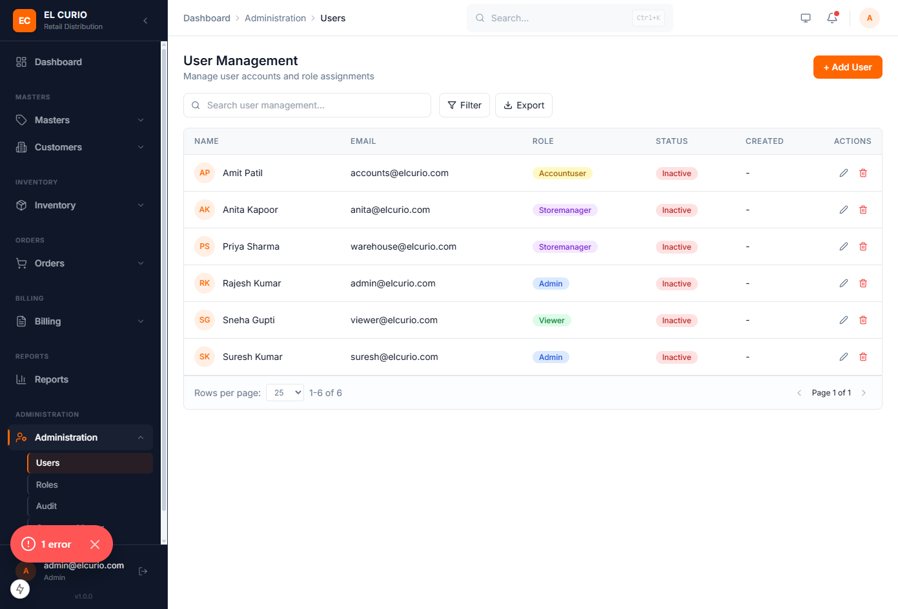
| Field | Type | Required | Description |
|---|---|---|---|
| Full Name | Text | Yes | User's full display name shown in the interface and audit logs. |
| Yes | Login identifier. Must be unique. Used for login and system notifications. | ||
| Password | Password | Yes (on create) | Initial password. User should change this on first login. Minimum 8 characters; mix of upper, lower, digit, special character. |
| Role | Dropdown | Yes | Assigned role: Admin, Storemanager, Accountuser, or Viewer. |
| Active | Toggle | Yes | Whether the user can log in. Deactivated users are denied login but historical data is preserved. |
RetailERP implements Role-Based Access Control (RBAC) with 34 modules and 4 permission levels per module. The permission matrix contains 136 role-module-permission mappings. Administrators can customize permissions for each role through the visual permission matrix interface.
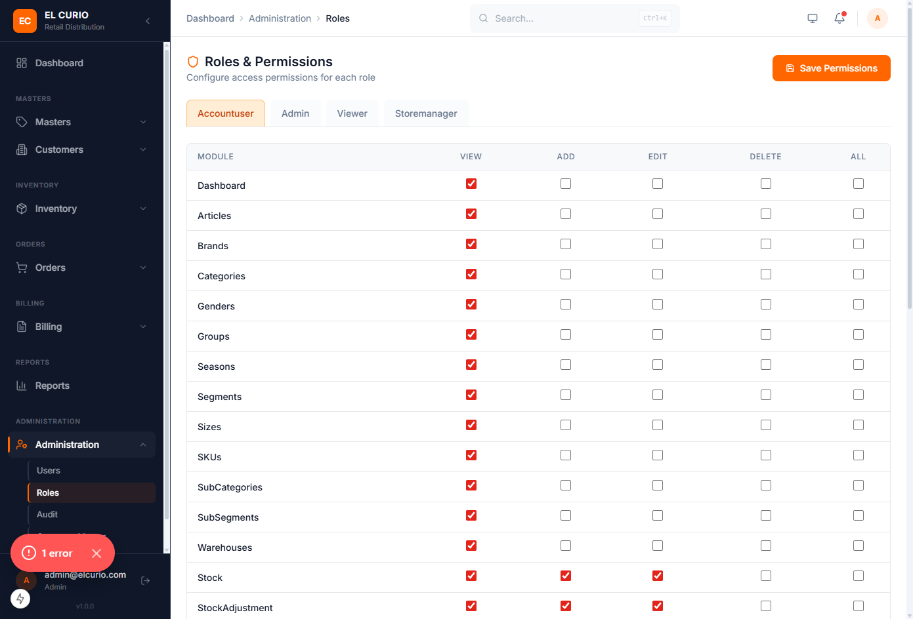
| Code | Permission | Description |
|---|---|---|
| V | View | Can see and read all data in this module |
| A | Add | Can create new records in this module |
| E | Edit | Can modify existing records in this module |
| D | Delete | Can delete or deactivate records in this module |
| Role | Access Level | Typical User |
|---|---|---|
| Admin | V/A/E/D on all 34 modules | System administrator; manages users, roles, and system configuration |
| Storemanager | V/A/E/D on business operations; View-only on Admin, Users, Roles, Audit, License | Operations manager; manages orders, stock, production, and master data |
| Accountuser | V/A/E on billing, inventory, and transactions; View-only on masters and admin | Finance/accounts staff; manages invoices, GRNs, dispatches |
| Viewer | View-only on all 34 modules | Management or auditors who need read access without modification rights |
| # | Module | Admin | Storemanager | Accountuser | Viewer |
|---|---|---|---|---|---|
| 1 | Dashboard | V/A/E/D | V/A/E/D | V/A/E | V |
| 2 | Clients | V/A/E/D | V/A/E/D | V | V |
| 3 | Stores | V/A/E/D | V/A/E/D | V | V |
| 4 | Warehouses | V/A/E/D | V/A/E/D | V | V |
| 5 | Articles | V/A/E/D | V/A/E/D | V | V |
| 6 | SKUs | V/A/E/D | V/A/E/D | V | V |
| 7 | Stock | V/A/E/D | V/A/E/D | V/A/E | V |
| 8 | Receipt (GRN) | V/A/E/D | V/A/E/D | V/A/E | V |
| 9 | Dispatch | V/A/E/D | V/A/E/D | V/A/E | V |
| 10 | Returns | V/A/E/D | V/A/E/D | V/A/E | V |
| 11 | StockAdjustment | V/A/E/D | V/A/E/D | V/A/E | V |
| 12 | StockFreeze | V/A/E/D | V/A/E/D | V | V |
| 13 | Transactions | V/A/E/D | V/A/E/D | V/A/E | V |
| 14 | Invoices | V/A/E/D | V/A/E/D | V/A/E | V |
| 15 | PackingList | V/A/E/D | V/A/E/D | V/A/E | V |
| 16 | DeliveryNotes | V/A/E/D | V/A/E/D | V/A/E | V |
| 17 | Reports | V/A/E/D | V/A/E/D | V/A/E | V |
| 18 | Users | V/A/E/D | V | V | V |
| 19 | Roles | V/A/E/D | V | V | V |
| 20 | Audit | V/A/E/D | V | V | V |
| 21 | CompanyMaster | V/A/E/D | V | V | V |
| 22 | License | V/A/E/D | V | V | V |
| 23 | Brands | V/A/E/D | V/A/E/D | V | V |
| 24 | Genders | V/A/E/D | V/A/E/D | V | V |
| 25 | Seasons | V/A/E/D | V/A/E/D | V | V |
| 26 | Segments | V/A/E/D | V/A/E/D | V | V |
| 27 | SubSegments | V/A/E/D | V/A/E/D | V | V |
| 28 | Categories | V/A/E/D | V/A/E/D | V | V |
| 29 | SubCategories | V/A/E/D | V/A/E/D | V | V |
| 30 | Groups | V/A/E/D | V/A/E/D | V | V |
| 31 | Sizes | V/A/E/D | V/A/E/D | V | V |
| 32 | CustomerOrders | V/A/E/D | V/A/E/D | V | V |
| 33 | ProductionOrders | V/A/E/D | V/A/E/D | V | V |
| 34 | SalesChannels | V/A/E/D | V/A/E/D | V | V |
Tenant Settings (Company Master) manages your organization's profile as it appears on all printed and digital documents. These details — company name, GSTIN, address, bank information, and invoice configuration — are used on every tax invoice, packing list, and delivery note generated by the system.
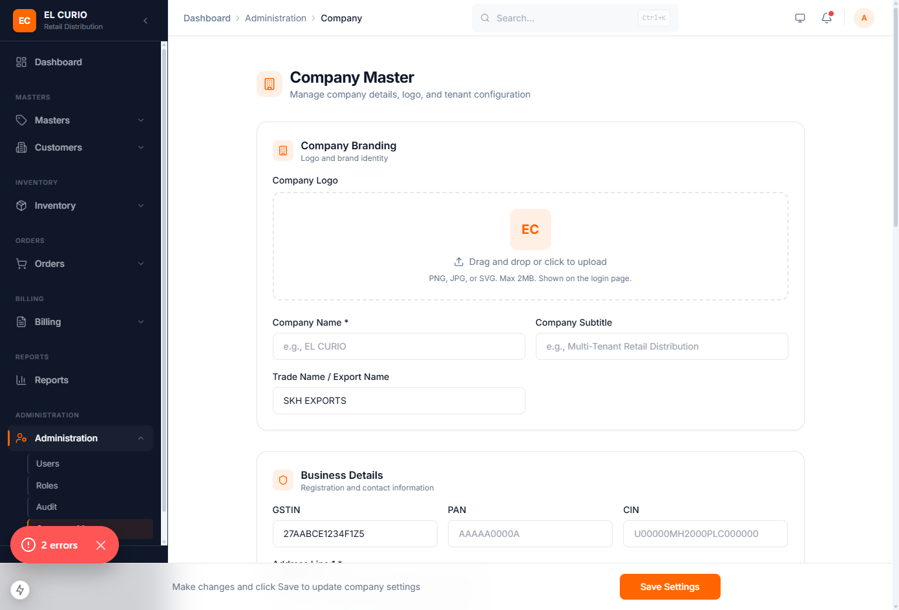
| Field | Description |
|---|---|
| Company Name | Legal business name printed on all documents (e.g., "EL CURIO SHOES PVT. LTD.") |
| Company Code | Short identifier used in document numbering prefix (e.g., "EC") |
| Trade Name | Brand/trade name if different from legal name |
| Logo URL | URL to company logo image. Must be accessible (HTTPS). Displayed on invoices and documents. |
| Subtitle | Tagline or division name shown under the company name on documents |
| Field | Description |
|---|---|
| GSTIN | Company's GST Identification Number (15 characters). Printed on all invoices as the seller's GSTIN. |
| PAN | Company Permanent Account Number (10 characters). |
| CIN | Company Identification Number (for registered companies). |
| Address | Registered office address. Printed on documents as the seller's address. |
| City / State / PIN | Location details. State is critical — all intra/inter-state GST determination is based on this. |
| Phone / Email / Website | Contact details printed on documents. |
| Field | Description |
|---|---|
| Account Name | Bank account holder name |
| Bank Name | Name of the bank (e.g., "HDFC Bank") |
| Branch | Branch name and city |
| Account Number | Bank account number for payment instructions on invoices |
| IFSC Code | Indian Financial System Code for NEFT/RTGS payments |
| Field | Description |
|---|---|
| Invoice Prefix | Prefix for invoice numbering (e.g., "EC" generates "EC/2026-27/001") |
| Financial Year | Current financial year (e.g., "2026-27"). Invoice numbers reset at the start of each year. |
| Default GST Rate | Default GST rate for footwear articles (typically 18%) |
| Terms & Conditions | Standard T&C text printed at the bottom of every invoice |
| Declaration | GST declaration text (e.g., "We declare that this invoice shows the actual price of the goods described...") |
| Authorised Signatory | Name and designation of the person signing invoices |
System Configuration covers the application-wide settings that control system behavior, appearance, and integrations. This includes theme settings, notification preferences, API integration settings, and operational parameters. Most settings require Admin access.
Users can customize the application appearance from the header theme switcher or user profile settings:
| Setting | Options | Description |
|---|---|---|
| Theme Mode | Light, Dark, System | Light = bright background; Dark = dark background; System = follows OS preference |
| Accent Color | Blue, Indigo, Emerald, Purple, Orange | Primary accent color used for buttons, highlights, and active states |
Theme preferences are saved per browser and persist across sessions.
The License page has two sections: current license status and the license activation workflow.
| Field | Description |
|---|---|
| License Status | Active, Expired, or Trial — displayed with a color-coded badge |
| Plan | License tier (e.g., Standard, Professional, Enterprise) |
| License Key | Unique encrypted key. Click "Copy" to copy to clipboard for sharing with support. |
| Valid Until | Date when the current license expires |
| Days Remaining | Countdown with color-coded indicator (green > 90 days, yellow ≤ 90 days, orange ≤ 14 days, red = expired) |
| Max Users | Maximum concurrent user accounts allowed under this license tier |
| Licensed Modules | Feature modules included in the license (Inventory, POS, Billing, Production, Reports, etc.) |
The license activation process has two steps:
| Activation Field | Required | Description |
|---|---|---|
| Plan | Yes | Standard, Professional, or Enterprise |
| Duration (Months) | Yes | License duration: 12, 24, or 36 months |
| Max Users | Yes | Maximum number of user accounts (1–500) |
| Valid From | Yes | Start date for the license period (defaults to today) |
| Modules | Yes | Which modules are included (multi-select checkboxes) |
A slim banner is displayed below the header on every page of the application for all authenticated users. The banner shows the license plan, expiry date, and days remaining. The color changes based on urgency:
The Audit Log provides a chronological, immutable record of all create, update, and delete operations performed in the system. Every data change is automatically recorded with the user's identity, timestamp, and before/after values. The audit log cannot be modified or deleted, ensuring data integrity for compliance and investigations.
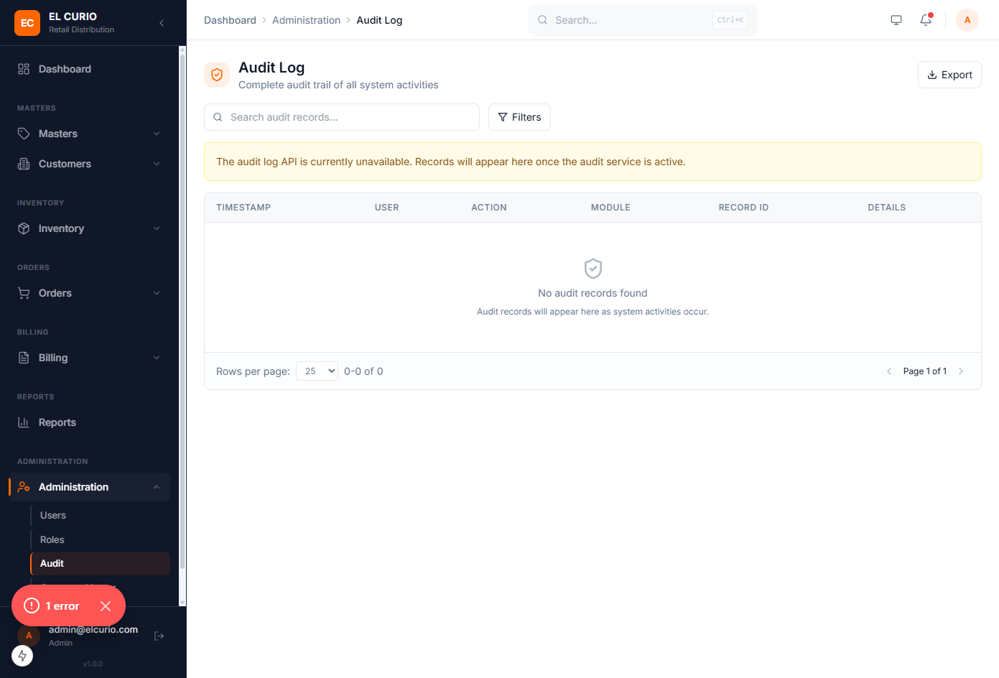
| Field | Description |
|---|---|
| Timestamp | Exact date and time of the action (UTC, displayed in local timezone) |
| User | Full name and email of the user who performed the action |
| Action | Type of operation: CREATE, UPDATE, or DELETE |
| Entity Type | Which module/data type was affected (e.g., Article, Order, Invoice, User) |
| Entity ID | The specific record identifier that was modified |
| Old Values | The field values before the change (JSON format). Click to expand. |
| New Values | The field values after the change (JSON format). Click to expand. |
| IP Address | The network IP address from which the action was performed |
| Filter | Description |
|---|---|
| Date Range | Filter by action timestamp range |
| User | Filter to actions performed by a specific user |
| Action Type | CREATE only, UPDATE only, DELETE only, or All |
| Entity Type | Filter to a specific module (e.g., see only Invoice changes) |
The POS module enables retail counter sales directly from the RetailERP interface. It supports barcode scanning for instant product lookup, real-time stock checking, GST-compliant receipt generation, and multiple payment methods. The POS is designed for fast-paced retail counter environments where speed and accuracy are paramount.
The POS screen is organized into three panels:
| Panel | Description |
|---|---|
| Left: Cart | Current sale items list with article name, size, quantity, price, and line total. Running totals at the bottom. |
| Center: Product Search | Barcode scan input, article search, and product grid with thumbnail images. |
| Right: Payment | Payment method selection, amount entry, change calculation, and receipt printing. |
| Field | Type | Description |
|---|---|---|
| Sale Number | Auto-generated | Unique POS transaction reference (e.g., "POS-2026-03-22-001"). |
| Cashier | Auto (logged-in user) | The user processing the sale. |
| Warehouse / Store | Session-configured | Source of stock for this POS session. Set when opening a POS session. |
| Customer | Optional lookup | Link the sale to a registered Client/Store for B2B invoicing. Leave blank for walk-in cash sales. |
| Article / SKU | Scan or search | Product added to the cart by scanning its EAN barcode or searching by name/code. |
| Quantity | Number | Number of units. Defaults to 1 per scan; can be increased manually. |
| Discount | Number (%) | Optional item-level or order-level discount percentage. |
| Payment Method | Dropdown | CASH, CARD (debit/credit), UPI, or SPLIT (multiple methods). |
The POS receipt includes:
| Shortcut | Platform | Action |
|---|---|---|
Ctrl+K | Windows / Linux | Open global search palette |
Cmd+K | macOS | Open global search palette |
Escape | All | Close modal dialogs, search palette, or dropdown |
Enter | All | Confirm / submit active form or selected search result |
Tab | All | Move to next form field |
Shift+Tab | All | Move to previous form field |
↑ / ↓ | All | Navigate search results or dropdown options |
Ctrl+P | Windows / Linux | Open browser print dialog for current page |
Cmd+P | macOS | Open browser print dialog for current page |
| Scenario | Tax Type | Rate |
|---|---|---|
| Seller state = Buyer state (intra-state) | CGST (9%) + SGST (9%) | 18% total |
| Seller state ≠ Buyer state (inter-state) | IGST | 18% total |
| HSN Code | Product Description | GST Rate |
|---|---|---|
| 6403 | Footwear with outer soles of rubber, plastics, leather or composition leather | 18% |
| 6404 | Footwear with outer soles of rubber or plastics and uppers of textile materials | 18% |
| 4202 | Trunks, suit-cases, vanity-cases, hand-bags, satchels — leather goods | 18% |
| 4205 | Other articles of leather or composition leather (belts, etc.) | 18% |
| 6217 | Made-up clothing accessories (belts of textile) | 5% |
A valid GSTIN (15 characters) follows this format:
| Term | Full Form | Description |
|---|---|---|
| CGST | Central Goods and Services Tax | Tax collected by central government on intra-state sales |
| SGST | State Goods and Services Tax | Tax collected by state government on intra-state sales |
| IGST | Integrated Goods and Services Tax | Tax on inter-state sales; shared between centre and state |
| GSTIN | GST Identification Number | Unique 15-character tax registration number |
| ITC | Input Tax Credit | GST paid on purchases that can be offset against GST payable on sales |
| HSN | Harmonized System of Nomenclature | International classification code for goods (determines GST rate) |
| IRN | Invoice Reference Number | Unique number assigned to e-invoices by the GST portal |
| E-Way Bill | Electronic Way Bill | Required document for moving goods worth > ₹50,000 between states |
| GSTR-1 | GST Return — Outward Supplies | Monthly/quarterly return for all sales (use GST Report to file) |
| GSTR-3B | GST Return — Summary Return | Monthly summary return declaring tax liability |
| Euro | UK | US (Men) | Indian | Inches | CM |
|---|---|---|---|---|---|
| 36 | 3.5 | 4.5 | 3.5 | 9.25 | 23.5 |
| 37 | 4 | 5 | 4 | 9.44 | 24.0 |
| 38 | 5 | 6 | 5 | 9.69 | 24.6 |
| 39 | 5.5 | 6.5 | 5.5 | 9.88 | 25.1 |
| 40 | 6 | 7 | 6 | 10.00 | 25.4 |
| 41 | 7 | 8 | 7 | 10.25 | 26.0 |
| 42 | 8 | 9 | 8 | 10.50 | 26.7 |
| 43 | 9 | 10 | 9 | 10.75 | 27.3 |
| 44 | 10 | 11 | 10 | 11.00 | 27.9 |
| 45 | 11 | 12 | 11 | 11.25 | 28.6 |
| 46 | 11.5 | 12.5 | 11.5 | 11.50 | 29.2 |
| Euro | UK | US (Women) | Indian | Inches | CM |
|---|---|---|---|---|---|
| 35 | 2.5 | 5 | 2.5 | 8.75 | 22.2 |
| 36 | 3 | 5.5 | 3 | 9.00 | 22.9 |
| 37 | 4 | 6.5 | 4 | 9.25 | 23.5 |
| 38 | 5 | 7.5 | 5 | 9.50 | 24.1 |
| 39 | 5.5 | 8 | 5.5 | 9.75 | 24.8 |
| 40 | 6.5 | 9 | 6.5 | 10.00 | 25.4 |
| 41 | 7 | 9.5 | 7 | 10.25 | 26.0 |
| 42 | 8 | 10.5 | 8 | 10.50 | 26.7 |
| Waist (inches) | Waist (cm) | Belt Length (cm) | Belt Size Label |
|---|---|---|---|
| 28–30 | 71–76 | 90–95 | S |
| 30–32 | 76–81 | 95–100 | M |
| 32–34 | 81–86 | 100–105 | L |
| 34–36 | 86–91 | 105–110 | XL |
| 36–38 | 91–97 | 110–115 | XXL |
| Adjustable | — | 80–120 | One Size |
A unique product style and color combination in the catalog. The central product master record in RetailERP.
Stock Keeping Unit — the most granular product level. Each SKU is a unique Article + Size combination with its own barcode.
Goods Receipt Note — a document recording goods received into a warehouse. Creates an inward stock movement.
Bill of Materials — the complete list of raw materials and quantities required to manufacture one unit of a finished article.
Maximum Retail Price — the highest price at which an article can be legally sold to a consumer. Basis for all margin calculations.
Cost Breakdown — the internal manufacturing or procurement cost per article. Used for margin and profitability analysis.
Sale or Return — a consignment business model where goods are supplied to a retailer and unsold stock can be returned.
Outright Market — a firm sale model where goods are sold and cannot be returned except for valid reasons.
Multi-Brand Outlet — a retail store that carries products from multiple brands.
Exclusive Brand Outlet — a retail store dedicated exclusively to one brand.
The primary product line division (e.g., Footwear, Leather Goods). Drives attribute display and reporting.
The physical product type classification (e.g., Shoes, Bags, Belts). Second-level classification after Segment.
The buyer's state of registration. Determines whether CGST+SGST (intra-state) or IGST (inter-state) applies on an invoice.
A document issued to reduce the amount owed by a customer — typically for goods returned or prices adjusted downward.
A document issued to increase the amount owed by a customer — for additional charges or upward price adjustments.
A period-end operation that locks stock quantities as of a specific date, creating closing stock for one period and opening stock for the next.
Role-Based Access Control — a security model where users are assigned roles, and roles have defined permissions across modules.
Unit of Measure — how quantities are counted (e.g., PAIRS for footwear, PCS for bags and belts).
Q: I forgot my password. How do I reset it?
A: Contact your system administrator. They can reset your password from Admin > Users by entering a new password for your account. There is no self-service password reset at this time.
Q: Can multiple people use the system simultaneously?
A: Yes. RetailERP supports concurrent users. Each session is independent, and all changes are committed to the central database in real-time.
Q: What browsers are supported?
A: Google Chrome (recommended), Mozilla Firefox, Microsoft Edge, and Safari. Internet Explorer is not supported.
Q: Is there a mobile app?
A: RetailERP is a responsive web application that works on mobile browsers. There is no separate native app. For best mobile experience, use Chrome or Safari and add the app to your home screen.
Q: I cannot delete a brand. Why?
A: Master records referenced by other records (articles, orders, invoices) cannot be deleted to preserve data integrity. Deactivate the brand instead by setting its Active status to OFF.
Q: What is the difference between Segment and Category?
A: Segment = product line / business division (Footwear, Leather Goods). Category = physical product type (Shoes, Bags, Belts). An article belongs to both.
Q: In what order should I set up master data?
A: Follow this sequence: (1) Brands → (2) Genders → (3) Seasons → (4) Segments → (5) Sub-Segments → (6) Categories → (7) Sub-Categories → (8) Groups → (9) Sizes → (10) Articles → (11) SKUs
Q: What does "Frozen" stock mean?
A: Frozen stock has been locked for period-end closing. No transactions (receipt, dispatch, return, adjustment) can be posted against frozen stock until it is unfrozen by an Admin or Manager.
Q: Why can't I dispatch more than the available quantity?
A: The system enforces real-time stock availability checks — this is a hard constraint. If you need to dispatch more, first record a stock receipt (GRN) to bring in additional stock.
Q: How does the monthly stock ledger work?
A: The formula is: Opening Stock + All Inward Movements − All Outward Movements = Closing Stock. When stock is frozen at month-end, the Closing Stock becomes the next month's Opening Stock.
Q: Can I edit a confirmed order?
A: No. Once confirmed, an order is locked. To make changes, cancel the order (providing a reason) and create a new corrected order.
Q: How does the system determine CGST+SGST vs. IGST?
A: Based on Place of Supply: If your company's state equals the buyer store's state → CGST (9%) + SGST (9%). If different states → IGST (18%).
Q: What is the difference between NET OF TAXES and ON MRP margin types?
A: ON MRP: discount calculated directly on MRP. NET OF TAXES: discount calculated on the MRP excluding the tax component, resulting in a slightly different unit price. Your client agreement determines which to use.
Q: Can I export reports to Excel?
A: Reports export as CSV files, which open natively in Microsoft Excel and Google Sheets. Click the Download / Export CSV button on any report page.
Q: What happens when I deactivate a user?
A: Deactivated users cannot log in. Their active sessions are terminated immediately. All historical records they created (orders, invoices, audit entries) are preserved unchanged.
Q: Can I create custom roles?
A: The four built-in roles (Admin, Storemanager, Accountuser, Viewer) cover most scenarios. You cannot create entirely new role names, but you can customize the permissions within each role via the Roles and Permissions matrix.
Q: How do I back up system data?
A: RetailERP uses a SQL Server database backend. Contact your system administrator or IT team to configure regular database backups. The application does not provide a built-in backup UI.
Enterprise Resource Planning for Footwear, Bags & Leather Goods Manufacturers and Distributors
© 2026 EL CURIO. All rights reserved. This document is confidential and intended for authorized users only.